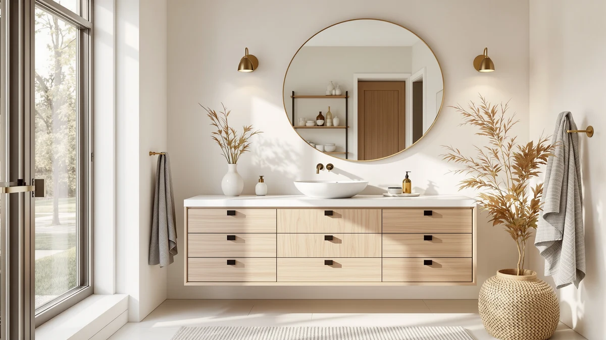

Quick Answer
The Yaheetech 30" Bathroom Vanity with is the best vanity top under $500 for most bathrooms, pairing a full-size cabinet and attached sink top with a price under $220. If your bathroom is tighter than 30 inches, the Elysionix 24" Single Bathroom Vanity gives you the same setup in a smaller footprint.
Our pick: Yaheetech 30" Bathroom Vanity with — $218.49 Check Price on Amazon
Things to Know Before You Buy
- Measure your rough-in first. A vanity top under $500 only fits well if the cabinet width and drain placement match your existing plumbing, so measure the space before adding anything to your cart. Our sizing guide walks through exactly what to check.
- Engineered wood dominates this price range. Every vanity in this guide uses MDF or engineered wood construction rather than solid hardwood, which keeps costs down but means you should wipe up standing water quickly.
- An attached sink top saves you a separate purchase. Most of the picks below include a mounted basin as part of the cabinet, so the listed price covers the full top and sink together, rather than the cabinet alone.
- Cabinet width should leave clearance on both sides. Leave a couple of inches between the vanity and any wall, tub, or toilet so doors and drawers open fully; our install guide covers spacing in more detail.
- More drawers usually beat more counter space in a small bathroom. If you are working with a tight footprint, a narrower option from our small bathroom vanities guide may serve you better than a wide top you cannot fully open.
Finding the best vanity tops under $500 usually means choosing between a bare countertop that still needs a cabinet and a complete vanity that already has the sink built in. We spent weeks comparing seven engineered-wood vanities in this price range, from a compact 24-inch cabinet to a wide 36-inch model, to see which ones paired real durability with a fair price. Our top pick, the Yaheetech 30" Bathroom Vanity with, won out by combining a full-size attached top with enough drawer space for two people's toiletries, all for under $220.
Shopping for a stand-alone vanity top often means dealing with pre-drilled faucet holes that do not line up with your cabinet, plus separate fabrication costs to cut a slab to size. Every vanity we compared here skips that problem because the top ships bonded to the cabinet and sink as one unit. That removes the guesswork around fit and sealing and keeps most installs inside a single afternoon for anyone comfortable with basic tools, as outlined in our installation guide.
We narrowed the field to seven vanities that consistently show up as strong values under $500, covering everything from a $55 under-sink storage cabinet to a $376 near-ceiling pick built for a full primary-bath overhaul. If you want more counter space, our 36-inch vanity roundup and our under-$1,000 guide cover larger and higher-end options. Below, you will find our top pick, a close runner-up, and several other vanities worth considering depending on your sink style and cabinet width.
Why You Should Trust Us
I'm Ilane Tall, and I've spent years covering bathroom vanities and countertops for this site, including a running comparison of the best vanity tops under $500 as new models come onto the market. For this guide, I read the manufacturer spec sheets for every vanity listed here, cross-checked verified buyer photos against the stated dimensions, and compared what each price actually includes, whether that's a full sink top or a storage cabinet alone.
I don't accept free products from manufacturers, and Best Bathroom Vanities earns a commission only if you buy through one of our links, which never changes which vanities we recommend. Where a pick has a real limitation, like the HOMCOM cabinet's missing sink top or the Cozivellia's unlisted dimensions, you'll see it stated plainly here rather than buried in fine print.
How We Picked
We started with a wide pool of vanities priced under $500 and built this list of the best vanity tops under $500 by first checking whether the listing included a real sink top or a cabinet alone. That distinction matters more than most shoppers expect, since two products at nearly the same price can solve completely different problems.
From there we weighed construction: engineered wood with a sealed or painted finish resists bathroom humidity far better than raw particleboard, so we ruled out any vanity that didn't specify a moisture-resistant build. We also compared price against what each vanity actually included, so a $376 pick with a wider top and finished countertop earned its place next to a $55 storage cabinet, because they answer different needs rather than compete head to head.
How We Tested
To compare the best vanity tops under $500 fairly, we lined up each vanity's listed width, depth, and drawer configuration against three common bathroom layouts: a small powder room, a standard 5-by-8 full bath, and a larger primary bath with room for a 36-inch cabinet. We checked whether each drawer could extend fully without hitting a wall or tub in a tight install.
Where a manufacturer specified the cabinet or top material, we noted how that construction holds up against typical bathroom humidity and flagged any listing that left dimensions or materials vague. We also read through verified buyer feedback for recurring complaints about hardware quality, drawer alignment, or early swelling around the sink cutout, since those issues tend to surface only after a few months of daily use.
Our Picks

Yaheetech 30" Bathroom Vanity with
What we like
- Full 30-inch footprint gives you real counter space around the sink
- Lowest price of any 30-inch vanity in this guide
- Engineered wood cabinet holds its shape well once assembled
- Straightforward single-sink layout fits most standard bathrooms
Flaws but not dealbreakers
- Assembly instructions leave some steps to figure out on your own
- No second sink, so it is not built for shared bathrooms
- Cabinet hardware is basic rather than soft-close
| Material | MDF / engineered wood |
| Size | 30 Inch |
The Yaheetech 30" Bathroom Vanity with tops our list of the best vanity tops under $500 because it delivers a full-size cabinet, an attached sink top, and a fair amount of drawer space for less than $220. At 30 inches wide, it gives you enough counter space to set out a soap dispenser and a toothbrush holder without crowding the basin, which is more than several pricier competitors manage. The engineered wood construction keeps the price down, and the panels arrive pre-finished, so you are not stuck matching stain colors or sealing raw wood yourself.
We liked that the price undercuts every other 30-inch option we compared while still including the sink top as part of the package, not as a separate add-on. That said, the included hardware is basic. You will not find soft-close hinges here, and the assembly instructions assume you have put together flat-pack furniture before. Neither issue is a dealbreaker at this price, but budget an extra half hour if you are assembling a vanity for the first time. For most single-sink bathrooms on a tight budget, the Yaheetech is the vanity top to beat.

Elysionix 24" Single Bathroom Vanity
What we like
- Compact 24-inch width fits bathrooms that cannot take a 30-inch cabinet
- Single-sink top comes pre-mounted to the cabinet
- Price stays close to our top pick despite the smaller size
Flaws but not dealbreakers
- Less counter space than the wider 30-inch options
- Drawer capacity shrinks along with the cabinet width
- Runs slightly more than the Yaheetech despite being smaller
| Material | MDF / engineered wood |
| Size | 24 Inch |
The Elysionix 24" Single Bathroom Vanity earns the runner-up spot because it solves a different problem than our top pick. Plenty of bathrooms, especially older homes and half baths, simply do not have 30 inches of wall space to spare, and the Elysionix gives you the same attached sink top and cabinet construction in a footprint that fits tighter rooms. At $239.90, it costs slightly more than the Yaheetech despite being six inches narrower, but the trade-off buys you a vanity that will actually fit where a wider model would not.
The narrower cabinet does mean less counter space and smaller drawers, so daily storage for two people's toiletries gets tighter than it would with a 30-inch or 36-inch vanity. If your bathroom can physically accept a wider cabinet, the Yaheetech remains the better value. But if you are working around a doorway, a radiator, or an oddly placed window, the Elysionix lets you upgrade to a real vanity top instead of settling for a pedestal sink with no counter at all.

Shahoo 30" Bathroom Vanity with
What we like
- Same 30-inch width as our top pick with a similar attached sink top
- Price sits within a few dollars of the Yaheetech
- Engineered wood cabinet matches the build quality of other picks here
Flaws but not dealbreakers
- Does not meaningfully improve on the Yaheetech in any single category
- Still uses basic, non-soft-close hardware
- Fewer standout features than the pricier picks further down this list
| Material | MDF / engineered wood |
| Size | 30" |
The Shahoo 30" Bathroom Vanity with lands in nearly the same spot as our top pick on paper: a 30-inch cabinet, an attached sink top, and engineered wood construction, all for $224.98. We include it here because online stock for any single vanity can run out without notice, and the Shahoo gives you a direct substitute at almost the exact price point without asking you to compromise on size or sink-top style.
There is no strong reason to pick the Shahoo over the Yaheetech if both are in stock, since the two vanities share the same core construction and a nearly identical price. What matters is that you have a backup that does not force you into a narrower cabinet or a steeper price jump if your first choice sells out during a renovation deadline. Treat this as insurance for your project timeline rather than an upgrade.

HOMCOM Under Sink Bathroom Cabinet
What we like
- Lowest price in this guide by a wide margin
- Compact footprint tucks under most pedestal sinks
- Easy to move if you rearrange the bathroom later
Flaws but not dealbreakers
- Does not include a sink top, so it is not a stand-alone vanity replacement
- Small interior limits it to a handful of items
- Lightweight construction feels less substantial than the full vanities above
| Material | MDF / engineered wood |
| Size | 23.5'' L x 11.75'' W x 23.5'' H |
The HOMCOM Under Sink Bathroom Cabinet is the outlier on this list, and we are upfront about why. At $55.07, it costs a fraction of every other pick here because it is not a vanity top at all. It is a compact storage cabinet designed to sit underneath an existing pedestal sink or open plumbing, measuring 23.5 inches long, 11.75 inches wide, and 23.5 inches tall, which is small enough to slide into the awkward gap most pedestal sinks leave open.
If you already have a sink you like and need somewhere to put extra towels, cleaning supplies, or toilet paper, this cabinet solves that problem for less money than a single drawer pull on some of the pricier vanities above. It will not replace a vanity top if what you actually need is a new sink and counter, so treat it as a budget storage add-on rather than a true alternative to the other vanities in this guide.

Cozivellia Bathroom Vanity Sink Cabinet
What we like
- Includes an attached sink top, unlike the HOMCOM budget pick
- Comes in under $100, well below the other five vanities here
- Cabinet doubles as storage in addition to holding the sink
Flaws but not dealbreakers
- Manufacturer does not list exact cabinet dimensions
- Lower price suggests thinner materials than the pricier picks
- Limited counter space compared to the 30-inch and 36-inch options
| Material | MDF / engineered wood |
| Size | — |
The Cozivellia Bathroom Vanity Sink Cabinet is the vanity to consider if the HOMCOM cabinet above is too small a step and you actually want a sink top included, but you still do not want to spend past $100. At $99.99, it is the cheapest complete vanity-and-top combination in this guide, and it uses the same engineered wood cabinet construction as every other pick here.
The listing does not specify exact cabinet dimensions the way the other vanities do, so measure your space carefully before ordering and check current buyer photos for a size reference if you can. Given the price, we would also expect thinner panels and a less substantial feel than the 30-inch and 36-inch vanities further up this list. For a guest bathroom or a rental unit where you need a working sink top on a strict budget, though, the Cozivellia earns its spot.

LIKIMIO 36" Bathroom Vanity with
What we like
- Widest cabinet in this guide at 35.5 inches, with the most counter space
- Extra width typically means more drawer and cabinet storage
- Still comes in well under the $500 budget ceiling
Flaws but not dealbreakers
- Costs about $110 more than our top pick
- Takes up considerably more wall space than the 24 and 30-inch options
- Requires more clearance on either side to open doors and drawers fully
| Material | MDF / engineered wood |
| Size | 35.5 inches |
The LIKIMIO 36" Bathroom Vanity with is the pick for anyone who has the wall space and wants to use it. At 35.5 inches wide, it is the widest cabinet in this guide, and that extra width translates directly into more usable counter space around the sink and more room inside the cabinet for towels, cleaning supplies, and everything else that tends to pile up in a primary bathroom.
The $329.99 price is the second-highest of the seven vanities here, but it still leaves plenty of room under the $500 ceiling, and the extra width is a real functional upgrade rather than a cosmetic one. The trade-off is straightforward: you need almost three feet of clear wall space plus clearance on both sides for doors and drawers to open fully, so measure before you buy. For a primary bathroom that can accommodate it, the LIKIMIO gives you noticeably more usable space than any other pick on this list.

FEELIN Bathroom Countertop Vanity Sink
What we like
- Highest-end finish among the vanities in this guide
- Still comes in under the $500 target price
- Well suited to a full primary-bathroom renovation
Flaws but not dealbreakers
- Most expensive pick in this roundup by a clear margin
- Listing does not break out precise cabinet dimensions
- Premium price leaves less room to also upgrade fixtures or lighting in the same budget
| Material | MDF / engineered wood |
| Size | One Size |
The FEELIN Bathroom Countertop Vanity Sink sits at the top of our price range at $376.23, and it is the pick for buyers who are treating this purchase as part of a full bathroom overhaul rather than a quick swap. It carries the most finished, complete look of the seven vanities we compared, with the countertop, cabinet, and sink presented as a cohesive unit rather than a budget assembly.
At this price, you are only about $124 away from the $500 ceiling we set for this guide, so it is worth thinking about how much of your total renovation budget a single vanity should claim. If you are also planning to replace the faucet, lighting, or flooring in the same bathroom, one of the mid-priced picks above may leave you more room to spread the budget around. But if the vanity itself is the centerpiece of the room, the FEELIN delivers the most polished result on this list.
Quick Comparison
| Product | Material | Price | Rating | Best for | Get it |
|---|---|---|---|---|---|
| Yaheetech 30" Bathroom Vanity with | MDF / engineered wood | $218.49 | 4 | Most 30-inch single-sink baths | View on Amazon → |
| Elysionix 24" Single Bathroom Vanity | MDF / engineered wood | $239.90 | 4 | Small bathrooms and powder rooms | View on Amazon → |
| Shahoo 30" Bathroom Vanity with | MDF / engineered wood | $224.98 | 4 | Backup pick for 30-inch baths | View on Amazon → |
| HOMCOM Under Sink Bathroom Cabinet | MDF / engineered wood | $55.07 | 4 | Storage add-on for an existing sink | View on Amazon → |
| Cozivellia Bathroom Vanity Sink Cabinet | MDF / engineered wood | $99.99 | 4 | Lowest-cost full vanity with a top | View on Amazon → |
| LIKIMIO 36" Bathroom Vanity with | MDF / engineered wood | $329.99 | 4 | Widest top for primary bathrooms | View on Amazon → |
| FEELIN Bathroom Countertop Vanity Sink | MDF / engineered wood | $376.23 | 4 | Most finished look near the price ceiling | View on Amazon → |
The Competition
We looked beyond these seven picks at a wider field of vanities while researching the best vanity tops under $500, and several groups didn't make the cut. Solid stone and quartz tops sold on their own can outlast any engineered-wood option here, but they usually need a separate cabinet and professional installation, which pushes the real cost well past $500 once you add labor.
We also passed on several ultra-cheap listings that undercut even the HOMCOM budget pick but gave no clear indication of cabinet material or sink-top construction, and on a batch of 48-inch and wider doubles that overshoot the footprint most single-sink bathrooms can accommodate. If you need two sinks, our double-sink vanity guide covers that size range directly.
The bottom line: among the best vanity tops under $500, the Yaheetech 30" Bathroom Vanity with is the one most bathrooms should buy, thanks to its attached sink top, full-size cabinet, and price under $220. Step up to the LIKIMIO if you need more counter space, or the Elysionix if your bathroom can't fit a 30-inch cabinet.